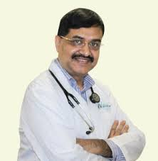
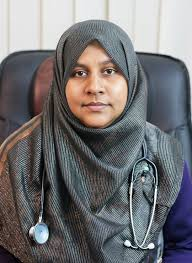
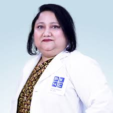

MBBS, MCPS, MPHIL (Psychiatry), MMEd, Fellow Child Psychiatry (Pakistan),
MACP (USA), FRCP (UK)
Psychiatry, Brain, Drug Addiction, Sex Specialist & Neuro Psychiatrist
Adviser Specialist, Psychiatry
Combined Military Hospital (CMH), Dhaka
Bangladesh Specialized Hospital
Address: 21, Mirpur Road, Shyamoli, Dhaka – 1207, Bangladesh
Visisting Hours: 5pm to 9pm (Closed: Friday)
Appointment: +8809666700100
Prof. Brig. Gen. Dr. Kumrul Hasan is a distinguished psychiatry and neuropsychiatry specialist in Dhaka, with extensive qualifications including MBBS, MCPS, MPhil (Psychiatry), MMEd, and fellowships in Child Psychiatry (Pakistan), along with MACP (USA) and FRCP (UK). He is highly experienced in treating psychiatric disorders, brain-related conditions, drug addiction, sexual health issues, depression, anxiety, schizophrenia, and neurobehavioral problems. Currently serving as an Adviser Specialist in Psychiatry at Combined Military Hospital (CMH), Dhaka, Dr. Kumrul Hasan is known for his compassionate and effective patient care. He provides consultations at Bangladesh Specialized Hospital, Shyamoli, from 5pm to 9pm (except Fridays).

MBBS (DMC), BCS (Health), FCPS (Psychiatry)
MPhil (Psychiatry, BSMMU), MD (Psychiatry, BSMMU)
Psychiatry, Drug Addiction, Dementia & Female Psychosexual Disorder Specialist
Assistant Professor, Psychiatry
Shaheed Suhrawardy Medical College & Hospital
Khidmah Hospital, Dhaka
Address: C-287/2-3 Khilgaon Bishwa Road, Khilgaon, Dhaka
Visisting Hours: 4pm to 6pm (Sat, Mon & Wed)
Appointment: +8809606063030
Insight Psycho-social Care
Address: Address: 71/1, Pioneer Road, Segunbagicha (Opposite to NBR), Dhaka
Visisting Hours: 5pm to 7pm (Sun, Tue & Thu)
Appointment: +8801834623022
Dr. Redwana Hossain is a Psychiatrist in Dhaka. Her qualification is MBBS, BCS (Health), MD (Psychiatry) . She is an Assistant Professor, Psychiatry at Shaheed Suhrawardy Medical College & Hospital. She regularly provides treatment to her patients at Khidmah Hospital, Dhaka. Practicing hour of Dr. Redwana Hossain at Khidmah Hospital, Dhaka is 4pm to 6pm (Sat, Mon & Wed) and at Insight Psycho-social Care is 5pm to 7pm (Sun, Tue & Thu).

MBBS, MSc (DU), M.Phil (Psychiatry), Fellow (WPA, Australia)
Mental Diseases, Brain & Drug Addiction Specialist
Professor, Child & Adolescent Psychiatry
Chairman, Department of Psychiatry
Bangabandhu Sheikh Mujib Medical University Hospital
Medinova Medical Services, Malibagh
Address: Gemcon Business Tower, 255 New Circular Road, Malibagh, Dhaka
Visisting Hours: 4pm to 6pm (Sun, Tue & Wednesday)
Appointment: +8801716410062, +8801790118855
Prof. Dr. Nahid Mahjabin Morshed is a Psychiatrist in Dhaka. Her qualification is MBBS, MSc (DU), M.Phil (Psychiatry), Fellow (WPA, Australia). She is a Professor, Child & Adolescent Psychiatry and Chairman, Department of Psychiatry at Bangabandhu Sheikh Mujib Medical University Hospital. She regularly provides treatment to her patients at Medinova Medical Services, Malibagh. Practicing hour of Prof. Dr. Nahid Mahjabin Morshed at Medinova Medical Services, Malibagh is 4pm to 6pm (Sun, Tue & Wednesday).